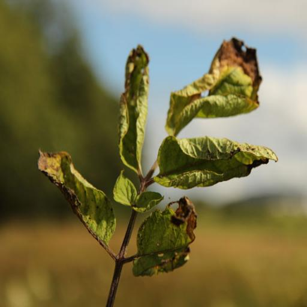

Exit
Early Blight in Tomato
Quick facts
- Early blight is one of the most common tomato and potato diseases, occurring nearly every season in Minnesota.
- It affects leaves, fruits and stems and can be severely yield-limiting when susceptible tomato cultivars are used and weather is favorable.
- Severe defoliation can occur. In tomatoes, fruit can be damaged by sun.
Pesticides
- SAAF Fungicide.
- Indofil M45 Fungicide.
- Antracol Fungicide.
- Nativo Fungicide.
- Amistar Top Fungicide.
Identification
- Initially, small dark spots form on older foliage near the ground. Leaf spots are round, brown and can grow up to 1/2 inch in diameter.
- Larger spots have target-like concentric rings. The tissue around spots often turns yellow.
- Severely infected leaves turn brown and fall off, or dead, dried leaves may cling to the stem.
- Seedling stems are infected at or just above the soil line. The stem turns brown, sunken and dry (collar rot). If the infection girdles the stem, the seedling wilts and dies.
- Stem infections on older plants are oval to irregular, dry brown areas with dark brown concentric rings.
- Fruit can be infected at any stage of maturity.
- Fruit spots are leathery and black, with raised concentric ridges. They generally occur near the stem. Infected fruit may drop from the plant.
Biology
- Early blight can be caused by two closely related species: Alternaria tomatophila and Alternaria solani.
- Both pathogens can infect tomatoes, potatoes, peppers, and several weeds in the Solanaceae family including black nightshade (Solanum ptycanthum), and hairy nightshade (Solanum physalifolium).
- Disease develops at moderate to warm (59 to 80 F) temperatures; 82 to 86 F is its optimum
- The pathogen is most likely to spread with wet weather or heavy dew, or when relative humidity is 90% or greater.
- The early blight pathogens both overwinter in infected plant debris and soil in Minnesota. The pathogen also survives on tomato seed or may be introduced on tomato transplants.
- Lower leaves become infected when they come into contact with contaminated soil, either through direct contact or when raindrops splash soil onto the leaves.
- Spores (reproductive structures) can germinate between 47° and 90° F and need free water or relative humidity of 90% or greater.
- Spores infect plants and form leaf spots as small as 1/8 inch in diameter in as little as five days.
- Spores can be spread throughout a field by wind, human contact or equipment, resulting in many reinfection opportunities throughout a growing season.
Managing The early blight
Resistant varieties
- Early blight-resistant varieties are readily available. As early blight occurs commonly in Minnesota, gardeners should look into these varieties.
- Resistance does not mean you will not see any early blight; rather, resistant varieties can better tolerate the pathogens, and so the damage will be less severe than with non-resistant varieties.
Cultural controls
- Cover the soil under the plants with mulch, such as fabric, straw, plastic mulch, or dried leaves.
- Water at the base of each plant, using drip irrigation, a soaker hose, or careful hand watering.
- Increase airflow by staking or trellising, removing weeds, and spacing plants adequately apart
- Pruning the bottom leaves can also prevent early blight spores from splashing up from the soil onto leaves.
- Let two years pass before you plant tomatoes or peppers in the same location.
Physical controls
- Remove leaves with leaf spots and bury or burn them. You may opt to bury them in your home compost pile if you maintain your compost pile according to Composting in home gardens.
- If you touch infected leaves, wash your hands well before working in healthy tomato plants. If you use pruning tools, wash and sanitize them after touching infected plants.
- It is okay to remove up to one-third of the plant's leaves if you catch the disease early. Do not remove more than one-third of the plant's leaves.
- Keep leaves dry to reduce the spreading of disease.

